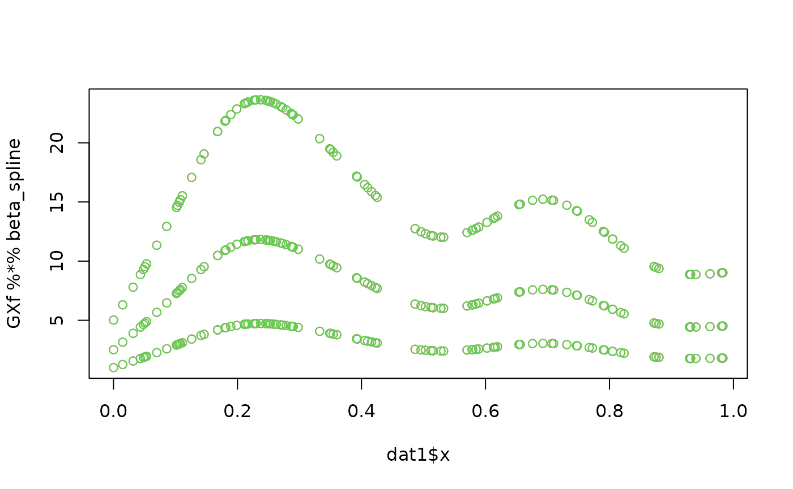
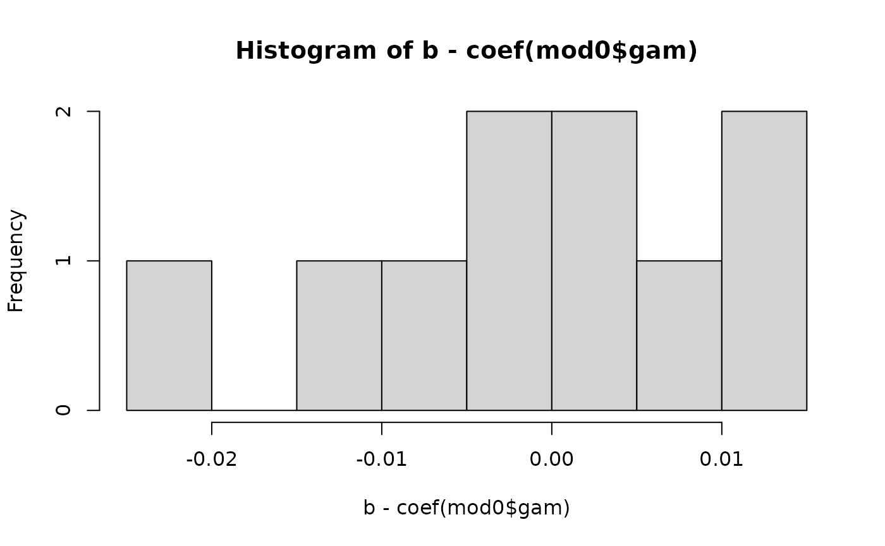

Maximum Likelihood Estimation
MaximumLikelihood.Rmd
library(Matrix)
library(lme4)
library(mgcv)
#> Loading required package: nlme
#>
#> Attaching package: 'nlme'
#> The following object is masked from 'package:lme4':
#>
#> lmList
#> This is mgcv 1.8-41. For overview type 'help("mgcv-package")'.
library(gamm4)
#> This is gamm4 0.2-6
library(galamm)The galamm package includes a function for computing the
Laplace approximate marginal likelihood of both GLLAMMs and GALAMMs. In
the future, this will replace the profile likelihood method, but due to
the complexity of the matter, it will take some time to develop a decent
API. This vignette describes how to perform maximum likelihood
estimation with the currently available functions; it is complicated,
but also gives the benefit of understanding what’s going on, in addition
to a more accurate algorithm which scales better. Before continuing,
make sure you’ve read the Introduction vignette.
Linear mixed model with factor structure
We will use an example dataset from the PLmixed package
(Rockwood and Jeon 2019).
PLmixed is probably a better choice for this model, but
this way we get a gentle start before we try estimating generalized
multilevel models with semiparametric terms.
library(PLmixed)
data("IRTsim")
IRTsub <- IRTsim[IRTsim$item < 4, ]
set.seed(12345)
IRTsub <- IRTsub[sample(nrow(IRTsub), 300), ]
IRTsub <- IRTsub[order(IRTsub$item), ]
irt.lam = c(1, NA, NA)Estimation with PLmixed
The model can be fit with PLmixed as follows, where
we’re pretending for now the the response is normally distributed,
although the binomial distribution would be correct.
Estimation with the galamm package
We can use the marginal_likelihood function from
galamm to compute the marginal likelihood of this model at
given values of fixed effects \(\beta\), variance components \(\theta\), and factor loadings \(\lambda\).
We start by adding \(\lambda\) as a variable in the model:
dat <- IRTsub
dat$abil.sid <- 1We then generate the components of a linear mixed model:
The fixed effects matrix does not contain any factor loadings, so we keep it as is.
X <- lmod$XThe random effects matrix does contain factor loadings, so we need a
mapping. Zt is on compressed sparse column format, and
diff(Zt@p) thus shows us the number of entries in each
column of this transposed matrix.
Zt <- lmod$reTrms$Zt
table(diff(Zt@p))
#>
#> 2
#> 300
lambda_mapping_Zt <- rep(dat$item, each = 2) - 2LWe also extract the random effects covariance matrix, with its mapping to \(\theta\). See Bates et al. (2015) for details.
Lambdat <- lmod$reTrms$Lambdat
theta_mapping <- lmod$reTrms$Lind - 1LWe can now start by confirming that we are able to compute the likelihood of the model.
ml <- marginal_likelihood(
y = dat$y,
trials = rep(1, length(dat$y)),
X = X,
Zt = Zt,
Lambdat = Lambdat,
beta = fixef(irt.model),
theta = getME(irt.model$lme4, "theta"),
theta_mapping = theta_mapping,
lambda = irt.model$Lambda[[1]][, "abil.sid", drop = TRUE][2:3],
lambda_mapping_X = integer(),
lambda_mapping_Zt = lambda_mapping_Zt,
weights = numeric(),
weights_mapping = integer(),
family = "gaussian",
family_mapping = rep(0L, nrow(dat)),
maxit_conditional_modes = 1
)The marginal_likelihood function returns the
log-likelihood, which we can compare with that from
PLmixed:
irt.model$`Log-Likelihood`
#> [1] -193.5633
ml$logLik
#> [1] -193.5633The marginal_likelihood function also returns the
gradient of the marginal likelihood with respect to \(\theta\), \(\beta\), and \(\lambda\), in that order. Reassuringly, it
is close to zero. Not however that PLmixed returns the
maximum of the profile likelihood, which albeit consistent, is not the
same as the maximum likelihood estimate (Gong and
Samaniego 1981; Parke 1986; Pawitan 2001).
ml$gradient
#> [1] -1.219268e-06 -1.959015e-06 3.175238e-13 1.398881e-13 4.058975e-13
#> [6] -2.035351e-05 1.550563e-05This gradient is computed with algorithmic differentiation using the
autodiff C++ library (Leal
2018), which means that it is exact to computer precision.
We can use this gradient to find the maximum likelihood estimates of
the model (technically, the Laplace approximate marginal maximum
likelihood estimates). We also use memoise to avoid
evaluating the function unnecessarily.
library(memoise)
theta_inds <- 1:2
beta_inds <- 3:5
lambda_inds <- 6:7
bounds <- c(0, 0, rep(-Inf, 5))
mlwrapper <- function(par){
marginal_likelihood(
y = dat$y,
trials = rep(1, length(dat$y)),
X = X,
Zt = Zt,
Lambdat = Lambdat,
beta = par[beta_inds],
theta = par[theta_inds],
theta_mapping = theta_mapping,
lambda = par[lambda_inds],
lambda_mapping_X = integer(),
lambda_mapping_Zt = lambda_mapping_Zt,
weights = numeric(),
weights_mapping = integer(),
family = "gaussian",
family_mapping = rep(0L, nrow(dat)),
maxit_conditional_modes = 1
)
}
mlmem <- memoise(mlwrapper)
fn <- function(par){
mlmem(par)$logLik
}
gr <- function(par){
mlmem(par)$gradient
}We start the optimization from some pretty arbitrary values, and it
converges quite fast, to a solution which is identical to the one the
PLmixed found. We set fnscale = -1 to get the
negative log-likelihood, which optim then
minimizes.
par_init <- c(1, 1, 0, 0, 0, 1, 1)
opt <- optim(par_init, fn = fn, gr = gr,
method = "L-BFGS-B", lower = bounds,
control = list(fnscale = -1))
opt$value
#> [1] -193.5633
irt.model$`Log-Likelihood`
#> [1] -193.5633We can confirm that the parameters are identical:
plot(
opt$par,
c(getME(irt.model$lme4, "theta"), fixef(irt.model),
irt.model$Lambda[[1]][2:3, 1]),
xlab = "optim()", ylab = "PLmixed");
abline(0, 1)It should also be clear to the reader the PLmixed is
much more convenient to use. However, the optimization shown here is
faster. In practice, it is useful to test different values for the
lmm argument, which defines how many iterations the
L-BFGS-B algorithm will keep in memory when approximating the
Hessian.
set.seed(2123)
system.time({
opt <- optim(par_init + runif(length(par_init), max = .5),
fn = fn, gr = gr,
method = "L-BFGS-B", lower = bounds,
control = list(fnscale = -1))
})
#> user system elapsed
#> 0.116 0.000 0.117
system.time({
opt <- optim(par_init + runif(length(par_init), max = .5),
fn = fn, gr = gr,
method = "L-BFGS-B", lower = bounds,
control = list(fnscale = -1, lmm = 20))
})
#> user system elapsed
#> 0.085 0.001 0.084
system.time({
irt.model <- PLmixed(form,
data = IRTsub, load.var = c("item"),
REML = FALSE, factor = list(c("abil.sid")),
lambda = list(irt.lam), iter.count = FALSE)
})#> user system elapsed
#> 2.352 0.051 2.302The inverse of the negative Hessian matrix is the covariance matrix
of the model. We can obtain this one with a single call at the final
parameter estimates, using the argument hessian = TRUE.
final_model <- marginal_likelihood(
y = dat$y,
trials = rep(1, length(dat$y)),
X = X,
Zt = Zt,
Lambdat = Lambdat,
beta = opt$par[beta_inds],
theta = opt$par[theta_inds],
theta_mapping = theta_mapping,
lambda = opt$par[lambda_inds],
lambda_mapping_X = integer(),
lambda_mapping_Zt = lambda_mapping_Zt,
weights = numeric(),
weights_mapping = integer(),
family = "gaussian",
family_mapping = rep(0L, nrow(dat)),
maxit_conditional_modes = 1,
hessian = TRUE
)
S <- solve(-final_model$hessian)We can confirm that also these standard errors agree with
PLmixed. Both for \(\hat{\beta}\)
sqrt(diag(S))[seq_along(beta_inds)]
#> [1] 0.06299119 0.06215440 0.06323201
as.data.frame(summary(irt.model)$`Fixed Effects`)[["SE"]]
#> [1] 0.06299815 0.06216950 0.06320914and for \(\hat{\lambda}\).
Generalized linear mixed models
For illustrating use with generalized linear mixed models, we start by using a model without any factor structures.
We first fit the model using lme4:
glmod <- glFormula(cbind(incidence, size - incidence) ~ period + (1 | herd),
data = cbpp, family = binomial)
devfun <- do.call(mkGlmerDevfun, glmod)
opt1 <- optimizeGlmer(devfun)
devfun <- updateGlmerDevfun(devfun, glmod$reTrms)
opt2 <- optimizeGlmer(devfun, stage=2)
fMod <- mkMerMod(environment(devfun), opt2, glmod$reTrms, fr = glmod$fr)Then we do it using marginal_likelihood:
theta_inds <- 1
beta_inds <- 2:5
mlwrapper <- function(par, hessian = FALSE){
marginal_likelihood(
y = cbpp$incidence,
trials = cbpp$size,
X = glmod$X,
Zt = glmod$reTrms$Zt,
Lambdat = glmod$reTrms$Lambdat,
beta = par[beta_inds],
theta = par[theta_inds],
theta_mapping = glmod$reTrms$Lind - 1L,
family = "binomial",
maxit_conditional_modes = 50,
hessian = hessian
)
}
mlmem <- memoise(mlwrapper)
fn <- function(par){
mlmem(par)$logLik
}
gr <- function(par){
mlmem(par)$gradient
}
set.seed(123)
opt <- optim(
par = c(1, runif(4)), fn = fn, gr = gr,
method = "L-BFGS-B", lower = c(0, rep(-Inf, 4)),
control = list(fnscale = -1, maxit = 2000, lmm = 20)
)
final_model <- mlwrapper(opt$par, hessian = TRUE)Using optim() with L-BFGS-B yields slightly higher
likelihood than lme4.
final_model$logLik
#> [1] -92.02628
logLik(fMod)
#> 'log Lik.' -92.02657 (df=5)However, this tiny difference might be due to small numerical
differences, as we can see be plugging the lme4 solution
into our function.
fn(opt2$par)
#> [1] -92.02629Also the estimated standard errors are close.
Generalized additive mixed model with factor structures
Warm-up
We can now fit the model illustrates in the Introduction vignette,
which we refer to for details. We start by adding a weight column to
dat1, to hold factor loadings.
lambda_init <- c(item1 = 1, item2 = 2, item3 = .4)
dat1$weight <- lambda_init[dat1$item]
head(dat1)
#> id item y x weight
#> 1 1 item1 4.516161 0.5324675 1.0
#> 2 1 item2 8.955929 0.5324675 2.0
#> 3 1 item3 1.774563 0.5324675 0.4
#> 4 2 item1 10.144956 0.6560528 1.0
#> 5 2 item2 19.633269 0.6560528 2.0
#> 6 2 item3 4.525468 0.6560528 0.4To confirm that what we do is correct, we fit this GAMM at the initial values of the loadings.
We then compute the mixed model representation of the GAMM.
sm <- smoothCon(s(x, by = weight), data = dat1)[[1]]
re <- smooth2random(sm, "", type = 2)Then set up the list which holds the data.
mdat <- list(
id = dat1$id,
y = dat1$y,
Xf = re$Xf,
Xr = re$rand$Xr,
weight = dat1$weight,
pseudoGroups = rep(1:ncol(re$rand$Xr), length = nrow(dat1))
)And set up the model.
lmod <- lFormula(y ~ 0 + Xf + (1 | pseudoGroups) + (0 + weight | id),
data = mdat, REML = FALSE)Then we add the penalized part of the smooth terms.
lmod$reTrms$Ztlist$`1 | pseudoGroups` <- as(t(as.matrix(mdat$Xr))[], class(lmod$reTrms$Zt))
lmod$reTrms$Zt <- rbind(lmod$reTrms$Ztlist$`0 + weight | id`,
lmod$reTrms$Ztlist$`1 | pseudoGroups`)To begin with, we complete model fitting at the initial loading.
devfun <- do.call(mkLmerDevfun, lmod)
opt <- optimizeLmer(devfun)
mod1 <- mkMerMod(environment(devfun), opt, lmod$reTrms, fr = lmod$fr)We can now compare the fitted models. The likelihoods are equal.
As are the fixed effects and variance components.
plot(c(fixef(mod1), getME(mod0$mer, "theta")),
c(fixef(mod0$mer), getME(mod1, "theta"))); abline(0, 1)We can also compare the penalized spline coefficients.
plot(
ranef(mod0$mer)$Xr[[1]],
ranef(mod1)$pseudoGroups[[1]],
xlab = "gamm4", ylab = "lme4"); abline(0, 1)We now try to convert back to the original spline coefficients.
plot(
re$trans.U %*% (re$trans.D * c(ranef(mod1)$pseudoGroups$`(Intercept)`, fixef(mod1))),
coef(mod0$gam)
); abline(0, 1)Next, we us marginal_likelihood to fit the same model,
still treating the factor loadings as fixed.
theta_inds <- 1:2
beta_inds <- 3:4
bounds <- c(0, 0, rep(-Inf, 2))
Lambdat <- lmod$reTrms$Lambdat
Lambdat@x <- 1
mlwrapper <- function(par, hessian = FALSE){
marginal_likelihood(
y = mod0$gam$y,
X = lmod$X,
Zt = lmod$reTrms$Zt,
Lambdat = Lambdat,
beta = par[beta_inds],
theta = par[theta_inds],
theta_mapping = lmod$reTrms$Lind - 1L,
family = "gaussian",
maxit_conditional_modes = 1,
hessian = hessian
)
}
mlmem <- memoise(mlwrapper)
fn <- function(par){
mlmem(par)$logLik
}
gr <- function(par){
mlmem(par)$gradient
}We reach the same maximum likelihood estimate also now.
opt <- optim(par = runif(4, 10, 100), fn = fn, gr = gr,
method = "L-BFGS-B", lower = bounds,
control = list(fnscale = -1, lmm = 20))
opt
#> $par
#> [1] 8.094555 75.164817 6.439333 12.305424
#>
#> $value
#> [1] -384.4884
#>
#> $counts
#> function gradient
#> 32 32
#>
#> $convergence
#> [1] 0
#>
#> $message
#> [1] "CONVERGENCE: REL_REDUCTION_OF_F <= FACTR*EPSMCH"Also now we can transform the spline coefficients back to their original parametrization.
ml_final <- mlwrapper(opt$par, hessian = TRUE)The random effects coming out of marginal_likelihood are
standard normal, so we need to apply the transformation \(\mathbf{b} = \boldsymbol{\Lambda}^{T}
\mathbf{u}\) to get random effects on the same scale as
mod0 and mod1.
Lambdat@x <- opt$par[theta_inds][lmod$reTrms$Lind]
b <- as.numeric(Lambdat[101:108, 101:108] %*% ml_final$u[101:108])
plot(
c(b, opt$par[beta_inds]),
c(ranef(mod0$mer)$Xr[[1]], fixef(mod0$mer))
); abline(0, 1)Then we can transform them back to their original parametrization (many steps involved here!!)
beta_spline <- re$trans.U %*% (re$trans.D * c(b, opt$par[beta_inds]))
plot(
beta_spline,
coef(mod0$gam)
); abline(0, 1)We can also confirm that the smooth functions are the same at the sample values:
B <- t(re$trans.D * t(re$trans.U))
Xfp <- cbind(re$rand$Xr, re$Xf)
GXf <- PredictMat(sm, data = dat1)
plot(
dat1$x,
GXf %*% beta_spline,
col = 2)
points(dat1$x, predict(mod0$gam), col = 3)
Finally we find confidence bands for the smooth term. First we need to reproduce the following covariance matrix:
vcov(mod0$gam)
#> s(x):weight.1 s(x):weight.2 s(x):weight.3 s(x):weight.4
#> s(x):weight.1 93.1087992 0.680273909 -24.69827873 0.40378788
#> s(x):weight.2 0.6802739 2.954222744 0.20591981 0.94761517
#> s(x):weight.3 -24.6982787 0.205919809 7.59260968 0.06390848
#> s(x):weight.4 0.4037879 0.947615167 0.06390848 1.32625871
#> s(x):weight.5 12.2640049 -0.390003165 -2.84378295 -0.08155424
#> s(x):weight.6 -2.0592072 -1.001975536 0.29123751 -0.17279982
#> s(x):weight.7 9.4646959 0.002171801 -2.05853693 -0.00440880
#> s(x):weight.8 0.1319892 0.820144854 0.10295556 0.13118449
#> s(x):weight.9 52.4884152 0.440738158 -13.92516678 0.25157079
#> s(x):weight.10 -5.0619540 -5.601841222 0.48326272 -2.51359689
#> s(x):weight.5 s(x):weight.6 s(x):weight.7 s(x):weight.8
#> s(x):weight.1 12.26400490 -2.05920722 9.464695857 0.13198918
#> s(x):weight.2 -0.39000317 -1.00197554 0.002171801 0.82014485
#> s(x):weight.3 -2.84378295 0.29123751 -2.058536935 0.10295556
#> s(x):weight.4 -0.08155424 -0.17279982 -0.004408800 0.13118449
#> s(x):weight.5 2.97847745 -0.04194028 0.553002878 -0.05623104
#> s(x):weight.6 -0.04194028 1.64043592 -0.052771137 -0.06954989
#> s(x):weight.7 0.55300288 -0.05277114 2.225399125 -0.01042005
#> s(x):weight.8 -0.05623104 -0.06954989 -0.010420046 1.27605273
#> s(x):weight.9 6.83590879 -1.17729764 5.266189673 0.09903052
#> s(x):weight.10 0.50399267 2.81658866 -0.435935604 -2.25217440
#> s(x):weight.9 s(x):weight.10
#> s(x):weight.1 52.48841521 -5.0619540
#> s(x):weight.2 0.44073816 -5.6018412
#> s(x):weight.3 -13.92516678 0.4832627
#> s(x):weight.4 0.25157079 -2.5135969
#> s(x):weight.5 6.83590879 0.5039927
#> s(x):weight.6 -1.17729764 2.8165887
#> s(x):weight.7 5.26618967 -0.4359356
#> s(x):weight.8 0.09903052 -2.2521744
#> s(x):weight.9 29.75360402 -2.9801871
#> s(x):weight.10 -2.98018712 13.0588138We now compute it, following the source code of
gamm4::gamm4():
V <- Matrix::Diagonal(length(ml_final$V), ml_final$phi) +
crossprod(Lambdat[1:100, 1:100] %*% lmod$reTrms$Zt[1:100, ]) * ml_final$phi
R <- Matrix::chol(V,pivot=FALSE)
Xfp <- as(Xfp, "dgCMatrix")
WX <- as(solve(t(R), Xfp), "matrix")
Sp <- diag(c(rep(1 / opt$par[[2]], 8), 0, 0))
qrx <- qr(rbind(WX,Sp/sqrt(ml_final$phi)),pivot = FALSE)
Ri <- backsolve(qr.R(qrx),diag(ncol(WX)))
Vb <- B%*%Ri; Vb <- Vb%*%t(Vb)
plot(as.numeric(vcov(mod0$gam)), as.numeric(Vb)); abline(0, 1)We then compute confidence bands around the smooth term:
Xlp <- PredictMat(sm, data = dat1)
v <- rowSums((Xlp %*% Vb) * Xlp)
inds <- order(dat1$x)[dat1$item == "item1"]
f <- (Xlp %*% beta_spline)
flo <- f - sqrt(v) * 2
fhi <- f + sqrt(v) * 2
plot(
dat1$x[inds], f[inds], type = "l", ylim = c(0, 13)
)
lines(dat1$x[inds], flo[inds], lty = 2)
lines(dat1$x[inds], fhi[inds], lty = 2)Maximum likelihood estimation
Having gained some confidence in our ability to fit a GAMM as a mixed model, we can now move on to also estimating the factor loadings.
We first creating mappings between factor loadings and element
indices in the design matrices. The lambda mapping for X
runs through each column.
lambda_mapping_X <- rep(as.integer(factor(dat1$item)) - 2L, ncol(lmod$X))The lambda mapping for Zt runs through the vector of
structural nonzeros. Compressed sparse column format is used, so the
x vector runs through columns. Each loading is repeated
nine times:
table(diff(lmod$reTrms$Zt@p))
#>
#> 9
#> 300
lambda_mapping_Zt <- rep(-1:1, each = 9, times = 300)
X <- lmod$X / as.numeric(lambda_init[lambda_mapping_X + 2L])
Zt <- lmod$reTrms$Zt
Zt@x <- Zt@x / as.numeric(lambda_init[lambda_mapping_Zt + 2L])We can confirm that they now are free of factor loadings:
# Before
head(lmod$X)
#> Xf1 Xf2
#> 1 0.3497902 1.0
#> 2 0.6995805 2.0
#> 3 0.1399161 0.4
#> 4 0.7921988 1.0
#> 5 1.5843976 2.0
#> 6 0.3168795 0.4
# After
head(X)
#> Xf1 Xf2
#> 1 0.3497902 1
#> 2 0.3497902 1
#> 3 0.3497902 1
#> 4 0.7921988 1
#> 5 0.7921988 1
#> 6 0.7921988 1
compmat <- cbind(before = lmod$reTrms$Zt@x, after = Zt@x)
compmat <- cbind(compmat, ratio = compmat[, 1] / compmat[, 2])
head(compmat, 27)
#> before after ratio
#> [1,] 1.000000000 1.000000000 1.0
#> [2,] -0.005368305 -0.005368305 1.0
#> [3,] -0.015441528 -0.015441528 1.0
#> [4,] -0.031062718 -0.031062718 1.0
#> [5,] -0.022059973 -0.022059973 1.0
#> [6,] -0.007786932 -0.007786932 1.0
#> [7,] -0.011682907 -0.011682907 1.0
#> [8,] 0.162647515 0.162647515 1.0
#> [9,] -0.497847112 -0.497847112 1.0
#> [10,] 2.000000000 1.000000000 2.0
#> [11,] -0.010736610 -0.005368305 2.0
#> [12,] -0.030883057 -0.015441528 2.0
#> [13,] -0.062125436 -0.031062718 2.0
#> [14,] -0.044119947 -0.022059973 2.0
#> [15,] -0.015573864 -0.007786932 2.0
#> [16,] -0.023365813 -0.011682907 2.0
#> [17,] 0.325295030 0.162647515 2.0
#> [18,] -0.995694225 -0.497847112 2.0
#> [19,] 0.400000000 1.000000000 0.4
#> [20,] -0.002147322 -0.005368305 0.4
#> [21,] -0.006176611 -0.015441528 0.4
#> [22,] -0.012425087 -0.031062718 0.4
#> [23,] -0.008823989 -0.022059973 0.4
#> [24,] -0.003114773 -0.007786932 0.4
#> [25,] -0.004673163 -0.011682907 0.4
#> [26,] 0.065059006 0.162647515 0.4
#> [27,] -0.199138845 -0.497847112 0.4We also remove the estimated values from Lambdat.
We then compute the marginal likelihood.
margl <- marginal_likelihood(
y = mdat$y,
trials = numeric(length(mdat$y)),
X = X,
Zt = Zt,
Lambdat = Lambdat,
beta = fixef(mod1),
theta = getME(mod1, "theta"),
theta_mapping = lmod$reTrms$Lind - 1L,
lambda = lambda_init[-1],
lambda_mapping_X = lambda_mapping_X,
lambda_mapping_Zt = lambda_mapping_Zt,
weights = numeric(),
weights_mapping = integer(),
family = "gaussian",
family_mapping = rep(0L, length(mdat$y)),
maxit_conditional_modes = 1
)
margl$logLik
#> [1] -384.4884
logLik(mod1)
#> 'log Lik.' -384.4884 (df=5)Finally, we can fit the model directly, using the same memoization technique as above.
theta_inds <- 1:2
beta_inds <- 3:4
lambda_inds <- 5:6
bounds <- c(0, 0, rep(-Inf, 4))
mlwrapper <- function(par, hessian = FALSE){
marginal_likelihood(
y = mdat$y,
X = X,
Zt = Zt,
Lambdat = Lambdat,
beta = par[beta_inds],
theta = par[theta_inds],
theta_mapping = lmod$reTrms$Lind - 1L,
lambda = par[lambda_inds],
lambda_mapping_X = lambda_mapping_X,
lambda_mapping_Zt = lambda_mapping_Zt,
family = "gaussian",
maxit_conditional_modes = 1,
hessian = hessian
)
}
mlmem <- memoise(mlwrapper)
fn <- function(par){
mlmem(par)$logLik
}
gr <- function(par){
mlmem(par)$gradient
}It ends up at the right values. Profile likelihood estimation fails from these initial values, and is much slower. Note that the deviance is lower now, because the factor loadings are estimated, rather than fixed at \((1, 2, .4)\).
par_init <- c(1, 1, 0, 0, 1, 1)
opt <- optim(par_init, fn = fn, gr = gr,
method = "L-BFGS-B", lower = bounds,
control = list(fnscale = -1, maxit = 2000, lmm = 20))
opt$value
#> [1] -384.1548
logLik(mod1)
#> 'log Lik.' -384.4884 (df=5)
opt
#> $par
#> [1] 8.0946271 75.1657899 6.4287930 12.2839683 2.0036579 0.4030812
#>
#> $value
#> [1] -384.1548
#>
#> $counts
#> function gradient
#> 75 75
#>
#> $convergence
#> [1] 0
#>
#> $message
#> [1] "CONVERGENCE: REL_REDUCTION_OF_F <= FACTR*EPSMCH"We can also now convert the spline coefficients back to their original parametrization.
ml_final <- mlwrapper(opt$par, hessian = TRUE)
u <- re$trans.U %*% (re$trans.D * c(ml_final$u[101:108], opt$par[beta_inds]))
Lambdat@x <- opt$par[theta_inds][lmod$reTrms$Lind]
b <- c(as.numeric(Lambdat[101:108, 101:108] %*% u[1:8]), u[9:10])
plot(b, coef(mod0$gam)); abline(0, 1)